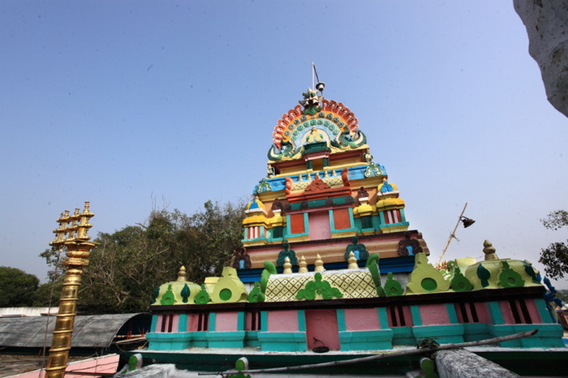
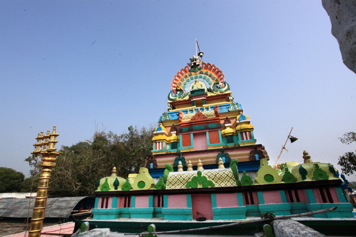
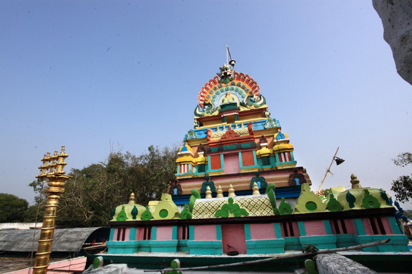

Birla Mandir is among the ancient temples in Hyderabad known for its majestic architecture. Constructed using white marble, it stands as a testament to the intricate temple architecture in Hyderabad. The temple's history is intertwined with the city's growth. The best time to visit this masterpiece is during the early morning or evening.
Timings: 7:00 AM - 12:00 PM and 3:00 PM - 9:00 PM
Things to do: Explore the stunning marble architecture, enjoy the panoramic view, and attend the aarti ceremonies.

Located in the vicinity, Chilkur Balaji Temple is one of the famous temples near Hyderabad. Its architecture is simple yet elegant, emphasising the spiritual essence. The temple is believed to fulfil wishes, making it a popular pilgrimage destination. The best time to visit temples in Hyderabad is on Fridays or Sundays, and this temple is often included in Hyderabad temple tours.
Timings: 5:00 AM - 8:00 PM
Things to do: Seek blessings for visas, circumambulate the temple for wish fulfilment.
Tucked within the Golkonda Fort, the Jagannath Temple is one of the ancient temples in Hyderabad, reflecting the rich Hyderabad temple history. The temple offers a serene atmosphere for worship. For a unique experience, visit during the annual Rath Yatra festival. It's one of the hidden gems among Hyderabad's temples, away from the city's bustle.
Timings: 4:00 AM - 12:00 PM and 4:00 PM - 8:00 PM
Things to do: Visit the Rath Yatra and admire the temple's tranquil setting.
Ujjaini Mahankali Temple is famous for its grand Navaratri celebrations. The temple reflects Hyderabad's temple history and boasts appealing architecture. Devotees throng to this temple during Navratri, making it the best time to experience the fervour.
Timings: 4:30 AM - 1:00 PM and 3:00 PM - 9:00 PM
Things to do: Witness the grandeur of Navaratri celebrations and seek blessings.